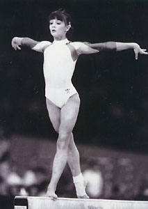

Lacramioara Filip (ROM)
1989 World Team Silver Medalist

Medal Total
World Championships: 1 Silver
Competition Results
1985 1986 1987 1988 This page was
created on March 13, 2005 and was last updated on September 05, 2022.
Hopes Cup: 6th AA
Jr. Romanian Championships: 5th AA, 2nd UB, 2nd FX (Cat. III)
Goodwill Games: 4th Team
Hopes Cup: 6th AA
Jr. Romanian Championships: 1st B (Cat. Master)
Jr. Balkan Championships: 1st Team, 4th AA, 3rd V
Jr. Romanian Championships: 1st AA, 1st UB, 1st B, 1st FX (Cat. Master)
Hungarian International: 9th AA
Intl. Friendship Tournament (Druzhba): 2nd Team, 5th AA, 1st V
Jr. ROM-USSR-GDR Meet: 4th AA, 2nd B
1989
Moscow News: 15th AA
ROM-CSSR Dual Meet: 1st Team
Romanian Championships: 6th AA, 3rd V, 3rd B, 5th UB
Trofeul Semenic: 5th AA
World Championships: 2nd Team
1990
Cottbus International: 28th AA, 5th V
GDR-ROM Dual Meet: 1st Team, 6th AA
1991
BEL-FRA-ROM-RUS: 1st Team, 2nd AA
Intl. Championships of Romania: 3rd AA
USA-ROM Dual Meet: 9th AA
© Gymn Forum